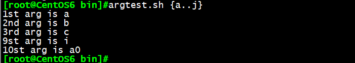

总结了一些shell编程初学者常犯的错误、注意事项及技巧：
1.判断变量是否加$：
（1）赋值变量时不加$
（2）如果命令能识别变量就不加$,如果命令不能识别变量加$
2.存放多行字符时”$name”变量外加双引号可保留换行格式
3.{}和（）中执行命令的区别：
（）中使用的命令为一次性的，小括号中相当于在子进程中执行命令,小括号继承括号外变量，但不会影响括号外变量
注：小括号中所说的子进程与常规的子进程不是一回事
而{ }中使用命令是在当前shell环境中执行，不会不开启子进程，会影响当前shell环境
例1：x=1;echo $$;(echo $$;echo $x;x=2);echo $x
虽然括号内开启了一个子进程，但该子进程号和括号外进程号一致；此外括号外变量会影响括号内，但括号内变量更改不会影响括号外。
例2：（echo $$;exit）
执行此命令，显示当前所在进程号，exit退出（）内子进程
{ }中使用命令是在当前shell环境中执行，不会不开启子进程，会影响当前shell环境
例3：x=1;echo $$;{ echo $$;echo $x;x=2; };echo $x
{}内命令相当于当前shell执行，因此括号外和括号内进程号一致，此外{}内变量影响了{}外的变量。
例4：{ echo$$;exit; }
执行此命令，显示当前所在进程号，exit退出当前shell；
因此编写脚本时，想要使用括号利用exit命令退出脚本，一定要使用{}，而不能使用（）
4.短路与&&和短路或||嵌套连续命令时可使用大括号
如&&{ cmd1 ；cmd2 ； }；||{ cmd1 ；cmd2 ；}；
测试或命令结果为假时，后跟连续多条命令，必须需采用此种格式：
false || { echo cmd1 ; echo cmd2 ; }
表示测试或命令返回false时，执行cmd1，cmd2
测试或命令结果为真时，后跟连续多条命令，可写为：
true && echo cmd1 && echo cmd2
也可写为：
true && { echo cmd1 ; echo cmd2 ; }
当条件测试或命令后同时出现短路且&&与短路或||有嵌套命令的情况时:
如：[ Test ] && { echo cmd1 ; echo cmd2 ; } || { echo cmd3; echo cmd4 ; }
表示当Test为真时，执行命令cmd1，cmd2；当Test为假时，执行cmd3，cmd4；
5.引用超过10个以上的位置变量时，数字加{}；如$10要写为${10}
不加{}时，默认将$10当作$1和0表示出来：

当给10加上大括号后，${10}才表示第10个位置变量：
6.位置变量$*与$@的区别
两者都可表示传递给脚本的所有参数，但$*将每个参数合并为一个字符串；
而$@每个参数作为独立字符
注意：$@、$*只在被双引号包起来的时候才会有差异。
7.在使用[ ]和test引用变量时，最好加双引号””避免出问题
不加引号也许不会出错，但加上引号肯定不会有错
8.脚本中进行变量的算术运算时，有空格尽量删除
变量的算术运算，多一个空格就会导致出错，所以尽量将空格删除
9.进行条件测试过程中，能加空格地方尽量都加空格
条件测试时，无论是括号两端还是字符两端少一个空格就会导致出错，所有尽量都加空格
10.使用=~进行PATTERN匹配时，需要加双括号[[ ]]，且正则表达式不能加引号，默认使用扩展正则表达式
正则表达式加引号就会导致错误结果，这与我们在使用grep与sed等命令利用到正则表达式需要加引号正好相反，需要注意
11.用于字符串比较时的用到的操作应该都使用引号
同上，不加引号也许不会出错，但加上引号肯定不会有错
12.[[ == ]]右侧可匹配类似于通配符glob的用法
此种匹配类似于通配符，但不完全等同于通配符，注意格式双中括号，双等号 [[ == ]]
13.脚本里不支持别名
14.文件测试后跟空字符时，也反馈为True。
例如：/data/fstab为普通文件，用-f选项判断时，后跟fstab文件或者空时都判断为真
因此要保证一个文件存在且满足测试条件时，
可表示为：[ -n “file” -a –f “file” ]
file文件是否存在且为普通文件
15.测试字符串是否为空除了-z及-n选项，还可用[ “$var” = “” ]；[ x”$var” = “x” ]来测试。
例1：当$var为空时，使用[ “$var” = “” ]返回结果0
例2：当$var为空时，[ x”$var” = “x” ]返回结果为0